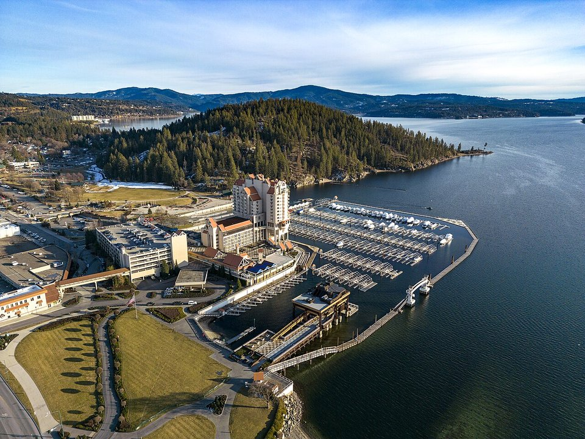

Lakefront · Resort
The Coeur d’Alene Resort
A lakeside tower with a marina, spa and the famous floating green.
Official details for The Coeur d’Alene ResortA lake, a boardwalk and a floating green.
Coeur d’Alene sits at the head of a 25-mile mountain lake in the Idaho Panhandle, with a lively downtown, a long public beach and one of the West’s best-known lake resorts. Land at Coeur d’Alene Airport, stay at the Coeur d’Alene Resort and walk its floating boardwalk, take a lake cruise, have dinner at Beverly’s, and drive 40 minutes to ride the Silver Mountain gondola.

Time illustration: direct distance at 150 KTAS plus 15 minutes for departure and arrival, matching the discovery page. Use ForeFlight for your actual flight plan.
KCOE, Coeur d’Alene Airport–Pappy Boyington Field, is a non-towered county airport at 2,320 feet with a 7,400-foot main runway, about 15 minutes from downtown.
Coeur d’Alene Airport, Hayden, ID
Migratory birds on and near the airport in October and November. Spokane’s airspace is just to the west. No live fuel price is shown.
Mountain flying: high density altitude on summer afternoons, mountain wave and strong winds over the ridges, afternoon thunderstorms from July to September, wildfire smoke in late summer, and winter snow and icing. Consider a mountain-flying course before you go. About 1900 nm from Myrtle Beach: two long days each way with several fuel stops. Plan a week, or overnight on the way out and back.
Rates and availability need travel dates. Summer weekends book early.
A lakeside tower with a marina, spa and the famous floating green.
Official details for The Coeur d’Alene ResortHotels and inns around the lake.
Visit Coeur d’Alene for More places to stayPrices and availability for your dates, through our partner Stay22. This is an affiliate link: we may earn a commission at no cost to you. The picks above are never paid.
Reserve weekend dinners.
A celebrated wine list and lake views at the resort.
Official details for Beverly’sSteaks and seafood on a floating restaurant.
Official details for Cedars Floating RestaurantIdaho and Washington wines in town.
Official details for Coeur d’Alene CellarsSummer is the season; fall color is a bonus.
This prototype links to the local visitor site. It does not yet match events to your travel dates.
Boating, beaches and cruises.
Visit Coeur d’Alene for Lake seasonLights and a lake cruise to see “Santa’s house.”
The Coeur d’Alene Resort for Holiday Light ShowSilver Mountain and Lookout Pass.
Silver Mountain for Ski seasonCheck the local calendar when choosing a weekend, and confirm dates and tickets with the organizer.
A sample Coeur d’Alene weekend. This is a two-day flight each way; plan a week. No bookings or availability confirmed.
Land at KCOE mid-morning.
Lunch in town.
A short walk, then back to the airport.
Land at KCOE, subject to weather, density altitude and your actual flight plan.
Walk the boardwalk and downtown.
Dinner at Cedars.
A lake cruise.
Hike Tubbs Hill.
Dinner at Beverly’s.
The Silver Mountain gondola.
Compute takeoff performance and allow time at the FBO.
Mountain afternoons bring wind, turbulence and storms; leave early.
The main sight.
Explore.
Dinner in town.
These details make the difference between an appealing list and a usable getaway.
Resort, then dinner reservations.
About 1,900 nm from Myrtle Beach: two long days each way.
Check wildfire smoke forecasts in August.
June to September.
Picks and links reviewed by WingAway Weekends. Hours, prices, menus and availability change often, so confirm directly with each place before booking. Spotted something out of date, or have a favorite we missed? Email us at hello@wingawayweekends.com.
WingAway Weekends helps you discover the destination. Use ForeFlight and current official aviation information for route, performance, weather, NOTAMs and preflight decisions. Flight planning and PIC responsibility stay with the pilot.